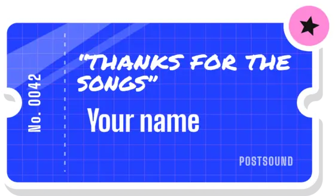

PS-1 · browser extension · free
Instagram photos have songs. Your browser never played them.
Postsound plays the song on every photo post on instagram.com, from the part the poster picked.
Chrome soon
Firefox soon
SIDE A · PICK A POST

Demo tunes, made by your browser. On Instagram you hear the poster’s song.
01spec sheet
- plays on
- Home feed, profiles, post pages and the post popup.
- plays when
- The post sits in the middle of your screen. One song at a time.
- stops when
- You scroll past, close the post, switch tabs, or a video plays with sound.
- skips
- Reels. They already have their own sound.
- controls
- Mute any photo. Set the volume or switch it off from the toolbar.
- collects
- Nothing. No servers, no analytics. Your sound settings stay in your browser.
- runs in
- Chrome and Firefox on desktop, and Firefox for Android.
- price
- Free. No account.
02help
No sound when I open Instagram?
Browsers hold sound until you click the page once. The button on the photo pulses until then.
Is it made by Instagram?
No. Postsound is independent and not affiliated with Instagram or Meta.
Something broke?
Open the popup and pick Report a problem, or write to contact@deepanalve.dev.
Where is the privacy policy?
03keep it free
Buy me a sticker. You get a one-of-one sticker made from your name, on a live wall with everyone who keeps Postsound going.
Buy me a sticker